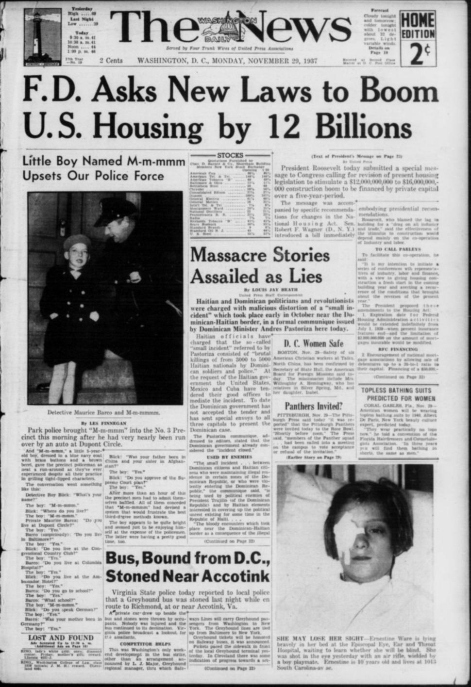

Trujillo EraEra de Trujillo
The Constabulary InheritanceLa herencia de la guardia
The era's first years belong to the settlement left by the occupation: an evacuation treaty, the customs receivership, and President Horacio Vásquez. Rafael Leonidas Trujillo, who enlisted under the occupation and rose to command the constabulary, is absent from these pages until his force made him: in February 1930 the guardia revolted, and by May he was elected president in a contest the opposition abandoned.
Los primeros años de la era pertenecen al arreglo que dejó la ocupación: un tratado de evacuación, la receptoría de aduanas y el presidente Horacio Vásquez. Rafael Leonidas Trujillo, que se alistó durante la ocupación y ascendió hasta mandar la guardia nacional, está ausente de estas páginas hasta que su fuerza lo hizo: en febrero de 1930 la guardia se sublevó, y en mayo ya había sido elegido presidente en unos comicios que la oposición abandonó.
1930: Election and Hurricane1930: elecciones y huracán
Weeks later came catastrophe: in September 1930 a hurricane devastated the capital, and a dispatch reported British marines and the Danae's medical unit landed to help, the city fed for the first time in a week, and a thousand-bed tent hospital opened. The regime rebuilt the capital and ran the country as a family property.
Semanas después llegó la catástrofe: en septiembre de 1930 un huracán devastó la capital, y un despacho informó de marines británicos y la unidad médica del Danae desembarcados para ayudar, de la ciudad alimentada por primera vez en una semana y de un hospital de campaña de mil camas abierto. El régimen reconstruyó la capital y administró el país como una propiedad familiar.
The Long AccommodationLa larga acomodación
American coverage across the decades is a study in ambivalence. Trujillo courted American editors, bought attention and presented himself as a bulwark against communism, and many papers took the bargain for years, as early as 1932 the State Department was looking on his administration as a model. Others printed the truth early: forced-labor arrests for vagrancy, in 1931. In 1937 came the border massacre of Haitians; the government's answer in these pages is Minister Pastoriza's communiqué assailing the stories as lies spread by the regime's enemies, while Washington, Mexico and Cuba tendered a mediation it had not accepted. In 1956 Jesús de Galíndez disappeared in New York; the coverage follows detectives searching the boilers of the freighter Fundación in Brooklyn after the charge that he was thrown alive into a boiler on Trujillo's orders, finding not a single solid clue. Dominicans lived it from inside the bargain's cost: a country policed by informers and prisons, its capital renamed for the dictator by a personality cult.
La cobertura estadounidense de esas décadas es un estudio de ambivalencia. Trujillo cortejó a los editores estadounidenses, compró atención y se presentó como un baluarte contra el comunismo, y muchos periódicos aceptaron el trato durante años; ya en 1932 el Departamento de Estado veía su administración como un modelo. Otros imprimieron la verdad temprano: arrestos por vagancia para trabajo forzado, en 1931. En 1937 llegó la masacre fronteriza de haitianos; la respuesta del gobierno en estas páginas es el comunicado del ministro Pastoriza, que tachaba las historias de mentiras difundidas por los enemigos del régimen, mientras Washington, México y Cuba ofrecían una mediación que no había aceptado. En 1956 Jesús de Galíndez desapareció en Nueva York; la cobertura sigue a los detectives registrando las calderas del carguero Fundación en Brooklyn tras la acusación de que había sido arrojado vivo a una caldera por órdenes de Trujillo, sin encontrar una sola pista sólida. Los dominicanos lo vivieron desde dentro del costo de ese trato: un país vigilado por informantes y cárceles, con su capital rebautizada con el nombre del dictador por un culto a la personalidad.
The Late Cracks, 1959-1960Las grietas tardías, 1959-1960
The late pages show the bargain failing: exile invasions from Cuba crushed in 1959; in January 1960, a pastoral letter read in Catholic churches answering mass arrests; Washington's Secretary of State saying his government was very much disturbed. That June came the Betancourt attempt, and the charge of Trujillo's part in it; within months Washington broke relations and moved to cut the Dominican sugar quota. The praise is part of the record: Washington's tolerance was one of the regime's load-bearing walls, and the final pages show the wall cracking.
Las últimas páginas muestran el trato resquebrajándose: invasiones de exiliados desde Cuba aplastadas en 1959; en enero de 1960, una carta pastoral leída en las iglesias católicas en respuesta a los arrestos masivos; el secretario de Estado de Washington diciendo que su gobierno estaba muy perturbado. Ese junio llegó el intento contra Betancourt, y la acusación de la parte de Trujillo en él; en pocos meses Washington rompió relaciones y se movió para recortar la cuota azucarera dominicana. El elogio también forma parte del registro: la tolerancia de Washington era uno de los muros de carga del régimen, y las páginas finales muestran ese muro agrietándose.
MomentsMomentos
The February RevoltLa revuelta de febrero
The revolt that rose in Santiago on February 23, 1930 held the capital in three days and cost President Vásquez his office in nine. The settlement reached under American mediation made Estrella Ureña president — and left General Trujillo, whose neutrality had let the rebels march, in command of the fortress at the capital's gate.
La revuelta que se alzó en Santiago el 23 de febrero de 1930 tomó la capital en tres días y le costó la presidencia a Vásquez en nueve. El arreglo alcanzado bajo mediación estadounidense hizo presidente a Estrella Ureña — y dejó al general Trujillo, cuya neutralidad había dejado marchar a los rebeldes, al mando de la fortaleza a la entrada de la capital.
The risingEl alzamiento
PRESIDENT TAKES ARMYEl presidente toma el mando del ejército
Dominican Rebellion Starts as Hoover Commission DepartsLa Rebelión Dominicana Comienza al Partir la Comisión de Hoover
The capital fallsCae la capital
A February 26 dispatch from Santo Domingo reports that insurgentUn despacho del 26 de febrero desde Santo Domingo informa que los insurgentes
United Press correspondent Harry W. Frantz reports from Santo DomingoEl corresponsal de la United Press Harry W. Frantz informa desde Santo Domingo
An Associated Press dispatch from Santo Domingo dated February 26Un despacho de la Associated Press desde Santo Domingo fechado el 26 de febrero
SANTO DOMINGO QUIETSanto Domingo está tranquilo
Insurgent forces in Santo Domingo captured the capital's fortressLas fuerzas insurgentes en Santo Domingo capturaron la fortaleza de la capital
Hoover to invesiigate: condi lions in HniU and recommend permanent policyHoover to invesiigate: condi lions in HniU and recommend permanent policy
A United Press dispatch from Santo Domingo dated February 26Un despacho de la United Press desde Santo Domingo fechado el 26 de febrero
An Associated Press dispatch from Santo Domingo dated February 26Un despacho de la Associated Press desde Santo Domingo fechado el 26 de febrero
Wall Street Props Up Falling Vasquez Domingo GovernmentWall Street sostiene al tambaleante gobierno dominicano de Vásquez
Mingo lawyer and self-styled “supreme chief of the revolution," hAbogado de Mingo y autodenominado «jefe supremo de la revolución», ha
The bargainEl pacto
The Indianapolis times describes a triangular political dramaThe Indianapolis times describe un drama político triangular
In a brief February 28 Associated Press dispatch from SantoEn un breve despacho de la Associated Press fechado el 28 de febrero desde Santo Domingo
Latest reports declared the revolutionary army was preparingLos últimos informes declaraban que el ejército revolucionario se preparaba
American Minister Charles B. Curtis informed the State DepartmentEl ministro estadounidense Charles B. Curtis informó al Departamento de Estado
Three Argue Peace Terms in DomingoTres Discuten los Términos de Paz en Domingo
Ureña takes powerUreña asume el poder
A March 1 dispatch from Santo Domingo in The Indianapolis timesUn despacho del 1 de marzo desde Santo Domingo en The Indianapolis times
Dominican President Retires; ‘Ill Health’El presidente dominicano se retira; 'mala salud'
YIELDS POSTCede el puesto
An Associated Press photo caption in the Brownsville heraldUn pie de foto de la Associated Press en el Brownsville herald
A March 3 Associated Press dispatch from Santo Domingo in The Bismarck tribuneUn despacho de la Associated Press del 3 de marzo desde Santo Domingo en The Bismarck tribune
General Rafael Estrella Urena, chief of the recent insurgentEl general Rafael Estrella Urena, jefe del reciente movimiento insurgente
A photograph caption shows the advance contingent of an untrainedUn pie de foto muestra el contingente de avanzada de una fuerza no entrenada
The San Zenón HurricaneEl huracán San Zenón
On September 3, 1930, a hurricane crossed Santo Domingo and left the capital in ruins. The papers counted the dead in the thousands and the homeless in the tens of thousands; within days the story turned to relief — Red Cross ships, Marine planes, British sailors from HMS Danae — and to the pestilence feared among the survivors in the wreckage.
El 3 de septiembre de 1930, un huracán cruzó Santo Domingo y dejó la capital en ruinas. Los periódicos contaron los muertos por miles y los desamparados por decenas de miles; en pocos días la historia se volvió el socorro — barcos de la Cruz Roja, aviones de los marines, marineros británicos del HMS Danae — y la pestilencia temida entre los sobrevivientes en los escombros.
The storm strikesLa tormenta azota
Reporting for the United Press from Santo Domingo, correspondentInformando para la United Press desde Santo Domingo, el corresponsal
In Santo Domingo, the cable company's office was flooded and housesEn Santo Domingo, la oficina de la compañía de cables se inundó y las casas
A dispatch from Miami on September 4 reports that radio communicationUn despacho desde Miami del 4 de septiembre informa que la comunicación por radio
The Dominican capital of Santo Domingo was "99 per cent destroyedLa capital dominicana de Santo Domingo quedó «destruida en un 99 por ciento»
While communication with Santo Domingo remained disrupted, weatherMientras la comunicación con Santo Domingo permanecía interrumpida, el tiempo
Following a hurricane with winds estimated around 150 milesTras un huracán con vientos estimados en alrededor de 150 millas
After a tropical hurricane wrecked the capital, officials of President Rafael L. Trujillo's administrationDespués de que un huracán tropical devastara la capital, funcionarios del gobierno del presidente Rafael L. Trujillo
Following State Department reports of extensive hurricane damageTras informes del Departamento de Estado sobre extensos daños del huracán
Hurricane Heads Toward Straits, Its Force SpentEl huracán se dirige hacia el estrecho, con su fuerza agotada
Commenting on the atmospheric forces that produce tropical tempestsAl comentar las fuerzas atmosféricas que producen las tempestades tropicales
Following a conference with President Trujillo and Minister CurtisTras una conferencia con el presidente Trujillo y el ministro Curtis
Red Cross Says 1,000 Dead and 20,000 HomelessLa Cruz Roja dice: 1,000 muertos y 20,000 sin hogar
Commandant of the Coast Guard Admiral Billard offered the Red CrossEl comandante de la Guardia Costera, almirante Billard, ofreció a la Cruz Roja
Winds that were reported as exceeding 150 miles an hour over Santo DomingoVientos que, según se informó, superaron las 150 millas por hora sobre Santo Domingo
An editorial commentary remarks that critics of the United States regimeUn comentario editorial señala que los críticos del régimen de los Estados Unidos
Three photo and map captions accompanying coverage of the West Indian hurricaneTres pies de foto y de mapa que acompañan la cobertura del huracán antillano
Dominican PresidentPresidente dominicano
An experienced disaster relief worker named Silva, who flewUn experimentado trabajador de socorro en desastres llamado Silva, que voló
Counting the deadEl conteo de los muertos
Commenting on the swift response of the U.S. government, ArmyAl comentar la rápida respuesta del gobierno de los Estados Unidos, el Ejército
Reports from the interior of the Dominican Republic stated that hurricaneInformes del interior de la República Dominicana indicaban que el huracán
Reporting from Santo Domingo on September 5 for the AssociatedInformando desde Santo Domingo el 5 de septiembre para la Associated
An Associated Press dispatch from Washington dated September 5Un despacho de la Associated Press desde Washington fechado el 5 de septiembre
An account preceding the main dispatch states that 80 percent of the residentialUn relato que precede al despacho principal indica que el 80 por ciento de la zona residencial
United Press staff correspondent Francisco Escovar reports from Santo DomingoEl corresponsal de plantilla de la United Press Francisco Escovar informa desde Santo Domingo
An editorial in The Washington Daily News commends the promptUn editorial en The Washington Daily News elogia la pronta
Reporting for the Associated Press from Santo Domingo on SeptemberInformando para la Associated Press desde Santo Domingo en septiembre
Relief and pestilenceEl socorro y la pestilencia
Above the dispatch, a map caption notes that the West Indian hurricaneSobre el despacho, un pie de mapa señala que el huracán antillano
A weather report notes that a new Caribbean disturbance of smallUn informe meteorológico señala que una nueva perturbación caribeña de pequeña
The danger of an epidemic among hurricane survivors increasedEl peligro de una epidemia entre los sobrevivientes del huracán aumentó
Fear of pestilence gripped the hurricane-flattened capital on SundayEl temor a la peste se apoderó de la capital arrasada por el huracán el domingo
An Associated Press dispatch from Washington dated September 8Un despacho de la Associated Press desde Washington fechado el 8 de septiembre
Planes bound for Santo Domingo are set to carry 2460 pounds of surgical dressingsAviones con destino a Santo Domingo se disponen a llevar 2460 libras de vendajes quirúrgicos
The arrival of a small fleet of relief ships carrying doctorsLa llegada de una pequeña flota de barcos de socorro que transportan médicos
A photo caption in the Imperial Valley Press states that President Rafael TrujilloUn pie de foto en el Imperial Valley Press afirma que el presidente Rafael Trujillo
Directs ReliefDirige la ayuda
Food Arrives in Stricken NationLlegan alimentos a la nación azotada
In Devastated Santo DomingoEn el devastado Santo Domingo
San Domingo Suffers Severely From StormSan Domingo sufre severamente por la tormenta
In his column, Arthur Brisbane writes that an unceasing windEn su columna, Arthur Brisbane escribe
Two NEA Service telephoto captions dispatched to the DouglasDos pies de telefoto del NEA Service enviados al Douglas
British Sailors Help Clean Up Santo DomingoMarineros británicos ayudan a limpiar Santo Domingo
The reckoningEl balance
Rear-Admiral W. R. Sexton dispatched the destroyer U.S.S. GilmerEl contralmirante W. R. Sexton despachó al destructor U.S.S. Gilmer
Relief Leaders In Santo DomingoLos dirigentes del socorro en Santo Domingo
Relief Leaders In Santo DomingoLos dirigentes del socorro en Santo Domingo
The 1937 Massacre and the Crisis It CausedLa masacre de 1937 y la crisis que provocó
The killing of Haitians along the border in October 1937 reached American readers a month later, against a wall of official denial. The crisis as the papers printed it: the charges, Minister Pastoriza's communiqué assailing the stories as lies, the mediation that Washington, Mexico and Cuba tendered, and the conciliation Trujillo at last accepted — while his government went on denying the slaughter into the new year.
La matanza de haitianos a lo largo de la frontera en octubre de 1937 llegó a los lectores estadounidenses un mes después, contra un muro de desmentidos oficiales. La crisis tal como la imprimieron los periódicos: las acusaciones, el comunicado del ministro Pastoriza que tachaba las historias de mentiras, la mediación que ofrecieron Washington, México y Cuba, y la conciliación que Trujillo por fin aceptó — mientras su gobierno seguía negando la masacre entrado el nuevo año.
The news breaksLa noticia se conoce
Haitian Crisis Imminent; U. S. Envoy to SceneCrisis haitiana inminente; enviado de EE. UU. al lugar
An order to return at once to the Dominican Republic on Sunday'sUna orden de regresar de inmediato a la República Dominicana en el primer avión disponible del domingo
Dominican Republic Says Haiti Incident is Closed By United Press JLa República Dominicana Dice que el Incidente con Haití Está Cerrado Por United Press
Charges and denialsAcusaciones y desmentidos
With President Trujillo of the Dominican Republic, after a crisisCon el presidente Trujillo de la República Dominicana, tras una crisis
The United Press reports that President Roosevelt offered the goodLa United Press informa que el presidente Roosevelt ofreció los buenos oficios
A November 15 dispatch from Washington reports that the UnitedUn despacho del 15 de noviembre desde Washington informa que los Estados Unidos
Reports published in The Washington daily news state that HaitiansInformes publicados en The Washington daily news afirman que los haitianos
The Waterbury Democrat reports that population pressure on the islandThe Waterbury Democrat informa que la presión demográfica en la isla
Massacre Stories Assailed as LiesHistorias de masacre atacadas como mentiras
The war scareEl temor a la guerra
Border Trouble Laid, In Turn, to HaitiansEl problema fronterizo atribuido, a su vez, a los haitianos
In an exclusive December 11 statement to the United Press from CiudadEn declaraciones exclusivas del 11 de diciembre a la United Press desde Ciudad Trujillo
8,000 Haitians Killed In Recent Border Clash8,000 haitianos muertos en un reciente choque fronterizo
Commenting on efforts to arbitrate the Dominican dispute with HaitiAl comentar los esfuerzos por arbitrar la disputa dominicana con Haití
He declared the slayings and assassinations of Haiti ans tookDeclaró que las matanzas y asesinatos de haitianos se
The Flight Was Too Much for Her, but I’ll Snap theEl vuelo fue demasiado para ella, pero voy a sacar la
Tin1 conciliation committee U to and /uba offered their K°°d officesTin1 conciliation committee U to and /uba offered their K°°d offices
Toward a settlementHacia un arreglo
Dres Pastoriza, Minister to the United States from the Dominican RepublicEl Dr. Pastoriza, Ministro en los Estados Unidos de la República Dominicana
Reporting from Washington, the Atlanta Daily World notes that Dominican MinisterInformando desde Washington, el Atlanta Daily World señala que el ministro dominicano
Haitian Massacre At present Richberg Is representing the Dominican presidentMasacre haitiana Actualmente Richberg está representando al presidente dominicano
The 1946 Earthquake and TsunamiEl terremoto y el maremoto de 1946
On August 4, 1946, an earthquake off the north coast sent the sea into the coastal towns. Matanzas was virtually wiped out; the counts rose past seventy dead and twenty thousand homeless, the shocks kept coming for a week, and relief planes dropped food to towns the broken roads no longer reached.
El 4 de agosto de 1946, un terremoto frente a la costa norte lanzó el mar contra los pueblos costeros. Matanzas quedó prácticamente borrada; las cuentas subieron a más de setenta muertos y veinte mil desamparados, los temblores siguieron durante una semana, y los aviones de socorro lanzaban alimentos a pueblos a los que los caminos rotos ya no llegaban.
The earthquake and the waveEl terremoto y la ola
Tidal Wave Hits Island In Caribbean Severe Earthquake Precedes Towering Mass of WaterUn maremoto golpea una isla en el Caribe Un fuerte terremoto precede a la imponente masa de agua
Seismologists evaluating a powerful Caribbean earthquake suggestedSismólogos que evaluaban un potente terremoto caribeño sugirieron
Giant Wave Engulfs Caribbean TownUna ola gigante engulle un pueblo del Caribe
EARTHQUAKE, HIGH WINDS DO HEAVY DAMAGE, 11 TOWNSTERREMOTO, VIENTOS FUERTES CAUSAN GRAVES DAÑOS, 11 PUEBLOS
Eye witness reports received today from Matanzas on the North CoastInformes de testigos oculares recibidos hoy de Matanzas, en la Costa Norte
The aftershocksLas réplicas
Caribbean Quake DamageDaños del terremoto en el Caribe
U. S. Seismographs Report New 'Very Strong' QuakeLos sismógrafos de EE. UU. registran un nuevo terremoto 'muy fuerte'
Dominican Republic Bans Food ExportsLa República Dominicana prohíbe las exportaciones de alimentos
EARTHQUAKE SHOCKSacudida de terremoto
CAPITAL SHAKENCapital sacudida
Seismologists and United States naval observers described a freshSismólogos y observadores navales de los Estados Unidos describieron un nuevo
Indies Seas Calm AgainLos mares de las Indias vuelven a estar en calma
The toll and the reliefEl saldo y el socorro
Continuing earthquakes and towering waves devastated the northernTerremotos persistentes y olas imponentes devastaron el norte de la República Dominicana
Official casualty figures from the heavily damaged northernLas cifras oficiales de víctimas de la muy dañada zona norte de
Two additional shocks renewed severe terror across northernDos sacudidas adicionales renovaron un severo terror en todo el norte de
The San José SanctionsLas sanciones de San José
In August 1960 the hemisphere did to Trujillo what it had never done: meeting at San José, the foreign ministers voted to break diplomatic relations and embargo arms, punishment for his part in the attempt on President Betancourt of Venezuela. Washington complied within the week, and then argued at home over the sugar quota, the economic weapon it still held.
En agosto de 1960 el hemisferio le hizo a Trujillo lo que nunca le había hecho: reunidos en San José, los cancilleres votaron romper relaciones diplomáticas y embargar las armas, castigo por su parte en el atentado contra el presidente Betancourt de Venezuela. Washington cumplió en una semana, y luego discutió en casa sobre la cuota azucarera, el arma económica que aún conservaba.
San José decidesSan José decide
Continuing from page one, the report details an exchange at the San José conferenceEn continuación de la primera página, el despacho reseña un debate en la conferencia de San José
Compromise Is Sought on D.R. MoveSe busca un compromiso sobre la medida de la R.D.
OAS Agrees on Break With Trujillo RegimeLa OEA acuerda romper con el régimen de Trujillo
Latin America: PunishmentAmérica Latina: Castigo
A CONVICTION THAT WILL MAKE HISTORY IN AMERICAUNA CONDENA QUE HARA HISTORIA EN AMERICA
Washington breaks relationsWashington rompe relaciones
Latin America Aid Program Is RappedCritican el programa de ayuda a América Latina
Following diplomatic developments, officials in Washington weighTras los acontecimientos diplomáticos, funcionarios en Washington evalúan
C Douglas Debe voise, whose firm has extensive sugar interests in the Dominican RepublicC Douglas Debevoise, cuya firma tiene extensos intereses azucareros en
The argument at homeEl debate en casa
The Assassination of TrujilloEl asesinato de Trujillo
Thirty-one years of rule ended in an ambush on a coastal highway.
Treinta y un años de gobierno terminaron en una emboscada en una carretera costera.
The killing, reportedEl asesinato, reportado
RAFAEL TRUJILLO OF DOMINICAN REPUBLIC ASSASSINATEDRAFAEL TRUJILLO DE LA REPÚBLICA DOMINICANA ASESINADO
The man, and what he builtEl hombre y lo que construyó
Trujillo Born on Farm, Worked in Sugar MillTrujillo nació en una finca y trabajó en un ingenio azucarero
Trujillo's Playboy Son Was Army Major at 3El hijo playboy de Trujillo fue mayor del ejército a los 3 años
The successionLa sucesión
Secretary of State Rusk departed from National Airport for ParisEl secretario de Estado Rusk partió del Aeropuerto Nacional hacia París
Dominican: New RegimeDominicana: nuevo régimen
Dominican: New RegimeDominicana: nuevo régimen
Dominican: New RegimeDominicana: nuevo régimen
Speaking at a news conference, the Dominican Republic's new 32-year-oldEn una conferencia de prensa, el nuevo jefe de las fuerzas armadas de la República Dominicana, de 32 años
The hunt for the killersLa caza de los asesinos
That soldiers and police shot down retired General Juan TomasQue soldados y policías abatieron al general retirado Juan Tomás Díaz
Police launched a downtown search after a tip placed Juan Tomas DiazLa policía desplegó una búsqueda en el centro de la ciudad tras recibir un aviso de que Juan Tomás Díaz
Washington and the hemisphere reactWashington y el hemisferio reaccionan
Change For Better HopedSe espera un cambio para bien
Following the assassination of Rafael Trujillo, who had ruledTras el asesinato de Rafael Trujillo, quien había gobernado
Trujillo Was Merely a Successor To the BuccaneersTrujillo fue simplemente un sucesor de los bucaneros
Mission To D.R. Asked OAS Likely To OK TeamMisión a la R. D. solicitada: la OEA probablemente aprobará el equipo
New Trujillo Regime Okays Study by OASEl nuevo régimen de Trujillo aprueba un estudio de la OEA
Send Marines To Bar Reds, Kearns AsksEnviar infantes de marina para frenar a los rojos, pide Kearns
Young TrujilloEl joven Trujillo
PlatesLáminas

Massacre Stories Assailed as Lies
Key articlesArtículos clave
Massacre Stories Assailed as LiesHistorias de masacre atacadas como mentiras
The Washington Daily News reported that the Dominican government had not yet accepted a mediation offer tendered by the United States, Mexico, and Cuba following the killings of Haitian nationals by Dominican soldiers and police. In a communiqué to editors, Dominican Minister Andrés Pastoriza stated that the Dominican government considered the incident closed. Pastoriza asserted that the border encounters involving illegal Haitian residents were being exploited by Trujillo's political enemies and by Haitian factions attempting to obscure domestic unrest.
El Washington Daily News informó que el gobierno dominicano aún no había aceptado la oferta de mediación presentada por Estados Unidos, México y Cuba a raíz de la matanza de ciudadanos haitianos a manos de soldados y policías dominicanos. En un comunicado remitido a directores de periódicos, el ministro dominicano Andrés Pastoriza manifestó que su gobierno daba el asunto por concluido. Pastoriza sostuvo que los choques fronterizos protagonizados por residentes haitianos en situación irregular estaban siendo manipulados por adversarios políticos de Trujillo y por facciones haitianas empeñadas en encubrir sus propias revueltas internas.
Dominican Ship Boilers Searched, No Galindez Murder Clues FoundRegistran las calderas de un barco dominicano sin hallar pistas del asesinato de Galíndez
New York detectives searched the Dominican freighter Fundación in Brooklyn for four hours after the Dominican revolutionary leader Nicolás Silfa charged that Jesús de Galíndez, a foe of Generalissimo Rafael Trujillo, had been thrown alive into a steaming boiler aboard the ship. The detectives questioned the 36 crew members and found not a single solid clue to Galíndez's fate, though the boilers' openings were large enough to squeeze a man through. A representative of the Ward Lines, which controls the Dominican Steamship Line, said opening a boiler door while it was fired would burn a man to a crisp, and Silfa, in a statement afterwards, repeated his charge that Galíndez's body was thrown into the firebox on Trujillo's orders.
Detectives de Nueva York registraron durante cuatro horas el carguero dominicano Fundación en Brooklyn, después de que el líder revolucionario dominicano Nicolás Silfa denunciara que Jesús de Galíndez, enemigo del generalísimo Rafael Trujillo, había sido arrojado vivo a una caldera humeante a bordo del barco. Los detectives interrogaron a los 36 tripulantes y no hallaron ni una sola pista sólida sobre el destino de Galíndez, aunque las bocas de las calderas eran lo bastante grandes para que cupiera un hombre. Un representante de la Ward Lines, que controla la Dominican Steamship Line, afirmó que abrir la puerta de una caldera encendida quemaría a un hombre hasta dejarlo en cenizas, y Silfa, en una declaración posterior, repitió su acusación de que el cuerpo de Galíndez fue arrojado a la cámara de combustión por órdenes de Trujillo.
British Marines Aid Santo DomingoMarines británicos ayudan a Santo Domingo
For the first time in a week, the city's population had enough food after a small fleet of relief ships and trucks from the interior brought sufficient provisions, medicines, shelters, clothing, doctors, nurses, and relief workers to feed 10,000 or more people in the bread lines. In addition, surgical care for the injured was bolstered by the opening of the 1,000-bed Roosevelt Emergency Tent Hospital.
Un despacho de la Associated Press fechado el 10 de septiembre en Santo Domingo informa que infantes de marina británicos y la unidad médica del crucero británico Danae desembarcaron para asistir a las autoridades dominicanas y relevar a las tropas dominicanas de guardia desde el huracán, tras los arreglos entre el presidente Trujillo y el encargado de negocios británico Gallienne, que también pusieron a disposición del presidente a los técnicos y el hospital del buque de guerra. Por primera vez en una semana, la población de la ciudad contó con alimentos suficientes después de que una pequeña flota de barcos de socorro y camiones procedentes del interior trajeron provisiones, medicinas, refugios, ropa, médicos, enfermeras y trabajadores de auxilio suficientes para alimentar a 10,000 o más personas en las filas de reparto. Además, la atención quirúrgica a los heridos se vio reforzada con la apertura del Hospital de Campaña de Emergencia Roosevelt, dotado de 1,000 camas.
ErasEras · The era's articlesLos artículos de la era · On the timelineEn la cronología